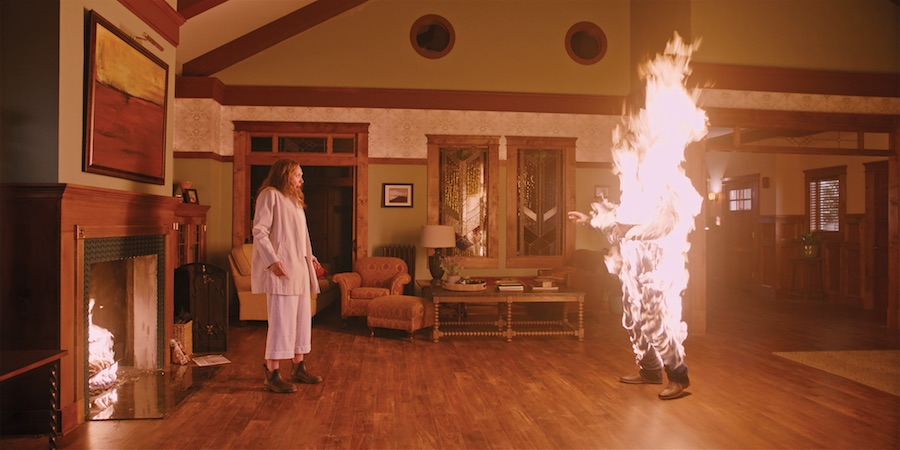

Psychological Films
Hereditary (2018)Hereditary was one of the top-rated horror films of 2018. It’s a film about a family who faces loss and tragedy. This is one of my favorites because it’s so disturbing while also adding very real problematic family dynamics. I recommend this film if you’re okay with watching a horror movie that requires a bit more patience with. It’s kind of a slow burn, but the visuals are beautiful as well as having a deeply disturbing atmosphere about it. This film goes into the psychological category here because we can see how each of the family members affected by this loss unwind in their own senses of guilt. The emotions depicted feel very raw and remind me that every family is like an onion and has many complicated layers. |
 |